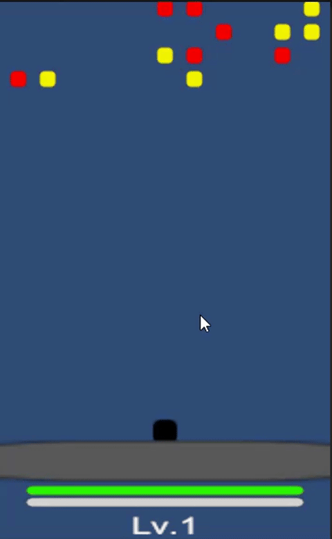
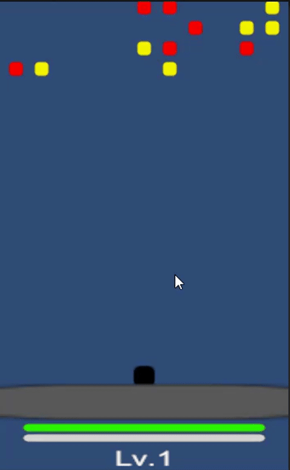

Noname Defense Prototype (Unity)
핀볼·벽돌깨기에서 영감을 얻은 격자 기반 방어 게임 프로토타입입니다. Clean Architecture를 적용해 **Core 도메인 로직 → Application UseCase/Service → Infrastructure Adapter → Presentation(ViewModel & View)**로 계층을 나누고, DocFX로 개발 문서를 자동화했습니다.
 

✨ Highlights
격자 웨이브 시뮬레이션
DefenseGameSettings로 열/행, 전진 간격, 드롭/경험치 파라미터를 데이터화.DefenseSimulationService가 숨겨진 -1행 대기열, 행 전진, 플레이어 자동 조준, 적/플레이어 투사체, 드롭 생성을 단일SimulationStepResult로 전달.
증강(Ability) 시스템
GameplayAbilityDefinition/GameplayEffectDefinitionScriptableObject로 능력을 정의하고,PlayerEntity.ApplyModifier로 공격력·쿨다운·사거리 등을 조정.- 게임 오버 시 증강 드롭은 소멸, 골드 드롭만 즉시 지급.
Clean Architecture 적용
- Core 엔티티/ValueObject는 Unity API 없이 순수 C#.
- Application 레이어는
StartGameUseCase,MovePlayerUseCase,DefenseSimulationService등으로 도메인 규칙을 실행. - Infrastructure는 Input/RepositoryAdapter, Presentation은
GameViewModel+ Unity View/FX가 담당.
🏗 Architecture
| Layer | Folder | Responsibility | Representative Code |
|---|---|---|---|
| Core | Assets/Scripts/Core |
PlayerEntity, EnemyEntity, GameState, DefenseGameSettings, EnemyDefinition 등 도메인 모델과 ScriptableObject |
EnemyDefinition |
| Application | Assets/Scripts/Application |
UseCase, SimulationService, 이벤트 DTO (SimulationStepResult, PlayerProjectileFiredEvent 등) |
DefenseSimulationService |
| Infrastructure | Assets/Scripts/Infrastructure |
Input/Repository/Tool 구현 (예: DefenseInputAdapter) |
DefenseInputAdapter |
| Presentation | Assets/Scripts/Presentation |
GameViewModel + View/FX/Sound, Bootstrapper |
GameViewModel |
| Docs | Docs/, _site/ |
DocFX 문서, TODO, Tools | Docs/todo/index.md |
🔁 Gameplay Flow
Unity Update()
└─ DefenseGameBootstrapper.Update()
└─ GameViewModel.Tick(deltaTime)
├─ Read Input (DefenseInputAdapter)
├─ MovePlayerUseCase.Execute()
├─ DefenseSimulationService.Tick()
│ ├─ 격자 스폰/전진
│ ├─ 플레이어/적 투사체
│ └─ 드롭·레벨업 이벤트
└─ Broadcast events (EnemySpawned, ResourceDropSpawned, …)
└─ Views/FX respond (Instantiate prefabs, play VFX/SFX)
📚 Documentation
- Landing / Docs Home
- Getting Started
- Layers Overview
- Tools (Definition Importer)
- TODO List
- API Reference
✅ TODO Snapshot
Docs/todo/index.md를 확인하세요.
📁 Repository GitHub: bossbobofather-cpu/noname 필요한 정보나 코드 하이라이트 스크린샷이 더 필요하면 언제든 말씀 주세요!